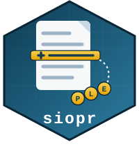
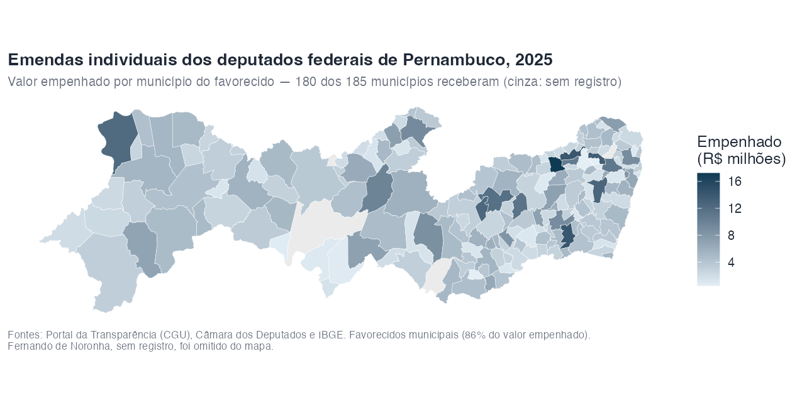
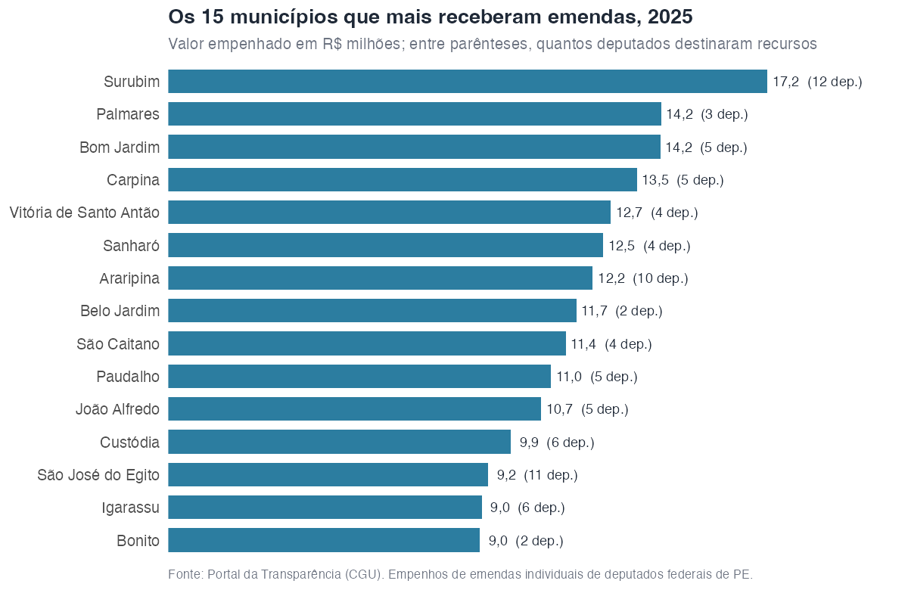

Em que municípios os deputados de Pernambuco aplicam suas emendas?
Source:vignettes/emendas-pe.Rmd
emendas-pe.RmdUm estudo de caso completo: partir da lista de deputados federais de um estado e chegar ao mapa dos municípios que recebem suas emendas. Os trechos de código são reproduzíveis, mas exigem rede e a chave do Portal da Transparência; as saídas mostradas (e as figuras) foram computadas em novembro de 2026, sobre o exercício de 2025.
O problema: a emenda não diz o município
No Portal da Transparência, a emenda tem um campo de localidade — mas ele quase nunca desce ao município:
pt_emendas(2025, autor = "Pedro Campos") |>
count(localidade_gasto)
#> localidade_gasto n
#> 1 MÚLTIPLO 3
#> 2 Nacional 1
#> 3 PERNAMBUCO (UF) 12
#> 4 RECIFE - PE 1O destino de verdade aparece na execução: cada
emenda tem documentos SIAFI (pt_emenda_documentos()), e o
detalhe de cada empenho (pt_despesa_documento()) traz o
favorecido — que, nas transferências a municípios, é a prefeitura ou o
fundo municipal.
Passo 1: os deputados, na API da Câmara
camara_deputados() consulta a API de Dados Abertos da
Câmara; com uf = "PE", vêm os 25 deputados federais em
exercício pelo estado.
deputados <- camara_deputados(uf = "PE")
nrow(deputados)
#> [1] 25Passo 2: as emendas de cada um
A busca da API do Portal é textual e por isso
pt_emendas() já remove os acentos do autor sozinho (“Túlio
Gadêlha” → “TULIO GADELHA”); filtramos pela igualdade exata para não
levar homônimos parciais junto.
emendas <- deputados |>
pull(nome) |>
map(\(nome) {
pt_emendas(2025, autor = nome) |>
filter(autor == toupper(sem_acento(nome))) |>
mutate(deputado = nome)
}) |>
list_rbind()
nrow(emendas)
#> [1] 235Dos 25, apenas Silvio Costa Filho (licenciado, hoje ministro) não tem emendas em 2025. E um bom teste de sanidade: o valor empenhado por autor encosta no teto individual do exercício, R$ 37,3 milhões por deputado.
Passo 3: documento a documento
Dois níveis de consulta: os documentos de cada emenda e o detalhe de cada empenho. São ~2 mil requisições; o pacote respeita sozinho o limite de 90 por minuto do Portal, então a célula abaixo leva cerca de meia hora.
documentos <- emendas |>
pull(codigo_emenda) |>
map(pt_emenda_documentos) |>
list_rbind()
empenhos <- documentos |>
filter(fase == "Empenho") |>
distinct(codigo_documento) |>
pull() |>
map(pt_despesa_documento) |>
list_rbind()
c(documentos = nrow(documentos), empenhos = nrow(empenhos))
#> documentos empenhos
#> 6411 1854
sum(empenhos$valor)
#> [1] 888278738Passo 4: do favorecido ao município
Três situações, em ordem de volume:
-
O nome do favorecido já diz o município (“MUNICIPIO
DO BOM JARDIM”, “FUNDO MUNICIPAL DE SAUDE DE SAO JOSE DO EGITO”): basta
casar com a grafia oficial do IBGE (
ibge_municipios()) — do nome mais longo para o mais curto, para “São José do Egito” não virar “Egito”. -
O nome é genérico (“FUNDO MUNICIPAL DE SAUDE”, sem
cidade — R$ 264 milhões!): o CNPJ resolve;
cnpj_municipio()consulta a Minha Receita e devolve o município da sede. - O favorecido não é municipal: fornecedores (compras centralizadas de máquinas e equipamentos pelos ministérios), o estado e seus fundos, universidades. Ficam de fora do mapa — o CNPJ de um fornecedor de São Paulo não diz onde o trator vai trabalhar.
municipios_pe <- ibge_municipios("PE") |>
mutate(busca = toupper(sem_acento(nome))) |>
arrange(desc(nchar(busca)))
casa_municipio <- function(favorecido) {
alvo <- toupper(sem_acento(favorecido))
achado <- map_chr(alvo, \(s) {
i <- which(stringr::str_detect(s, paste0("\\b", municipios_pe$busca, "\\b")))[1]
if (is.na(i)) NA_character_ else municipios_pe$nome[[i]]
})
achado
}
empenhos <- empenhos |>
mutate(
municipal = stringr::str_detect(
nome_favorecido, "^MUNICIPIO|^PREFEITURA|FUNDO MUNICIPAL|CAMARA MUNICIPAL"
),
municipio = if_else(municipal, casa_municipio(nome_favorecido), NA)
)
# os genéricos, pelo CNPJ da sede
sedes <- empenhos |>
filter(municipal, is.na(municipio)) |>
distinct(codigo_favorecido) |>
pull() |>
cnpj_municipio()
empenhos <- empenhos |>
left_join(sedes, by = c("codigo_favorecido" = "cnpj"), suffix = c("", "_sede")) |>
mutate(municipio = coalesce(municipio, casa_municipio(municipio_sede)))O resultado: 86% do valor empenhado tem município identificado (2% vai ao governo do estado, 12% a fornecedores e outras entidades) — e nenhum centavo municipal sai de Pernambuco. Os favorecidos de outras UFs que aparecem na base são fornecedores e órgãos federais, nunca prefeituras.
O mapa
library(ggplot2)
por_municipio <- empenhos |>
filter(!is.na(municipio)) |>
summarise(valor = sum(valor), .by = municipio)
geobr::read_municipality(code_muni = "PE", year = 2024) |>
left_join(por_municipio, by = c("name_muni" = "municipio")) |>
ggplot() +
geom_sf(aes(fill = valor / 1e6), color = "white", linewidth = 0.1) +
scale_fill_gradient(low = "#e3eef5", high = "#0e3a53", na.value = "grey92")
As emendas individuais chegam a quase todo lugar: 180 dos 185 municípios receberam algum empenho em 2025 (ficaram de fora Águas Belas, Fernando de Noronha, Floresta, Santa Cruz da Baixa Verde e Tracunhaém). E chegam pulverizadas: os 10 municípios que mais recebem somam só 17% do valor, e é preciso somar 49 municípios para alcançar metade dele.

Surubim e São José do Egito ilustram dois padrões opostos de destaque: Surubim lidera recebendo de 12 deputados diferentes, enquanto Belo Jardim e Bonito aparecem no topo com recursos de apenas 2. No sentido inverso, o grau de pulverização varia muito por deputado: de 46 municípios atendidos (Carlos Veras) a 10 (Fernando Coelho Filho), com a maioria entre 15 e 30.
Ressalvas
- Empenho não é pagamento. Usamos a fase de empenho por ser a mais completa no exercício corrente; os valores pagos são menores e chegam depois (muitos como restos a pagar).
- O favorecido municipal indica o destino; o fornecedor, não. Os 12% de “outros” incluem compras centralizadas cujo beneficiário final é um município que a base não revela — a cobertura de 86% é um piso, não um retrato exato.
- Transferências especiais (as “emendas Pix”) têm o município como favorecido direto do empenho, então entram no mapa com precisão total.